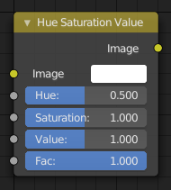

色相/饱和度/明度节点¶

色相/饱和度/明度节点。¶
色相 /饱和度 /明度 节点 在HSV色彩空间对颜色进行变换。
输入¶
- 系数
控制此节点在输出图像上的作用效果程度。
- 图像
标准化图像输入。
属性¶
颜色变换是相对变化。在着色器和纹理节点树类型中，输入连接端口有如下可使用的属性。
- 色相
指定图像的色相旋转值。360°被映射为 (0 到 1)的区间范围。色相在 0 (-180°) 和 1 (+180°) 时，结果是一致的。
- 饱和度
饱和度为0的图像，色相信息被移除变为灰度图像，当饱和度大于1.0将继续增加图像颜色的饱和程度。
- 亮度
图像的整体亮度值。减少/增加 数值会使图像 变暗/变亮。
输出¶
- 图像
标准化图像输出。
色相/饱和度 技巧¶
记住一些特点将帮助用户更好的使用此节点：
- 色相是反相的
一幅蓝色图像，色相参数设置为(0 或 1)，输出为黄色(从0值慢慢增加数值，颜色逐渐变亮，中间时为蓝色，最大时为黄色)。一幅黄色图像，色相设置为0或1，变为蓝色。
- 色相和饱和度协同操作。
因此，色相值为0.5时，将使颜色维持本身色彩蓝色，但 饱和度 可以加深或减淡颜色的浓度。
- 灰色是中性色彩
一幅灰度图像，RGB值是相等的，没有色相外观。因此，此节点只能影响 值 信息使图像发生亮度变化。改变“值”参数，将影响整个灰度图像，从黑色到白色；无论在哪种灰度颜色，RGB值始终保持相等。
- 通过时间节点改变效果
色相和饱和度值可以和 时间节点 一起使用制作颜色动画效果，或者对其节点某个属性产生动画效果。
Note
色调
此HSV节点仅仅改变原本的色相。将一个单色RGB输入节点和要进行着色处理的图像同时连接到“混合”节点，对灰度图像彩色化，或者对图像进行着色处理。